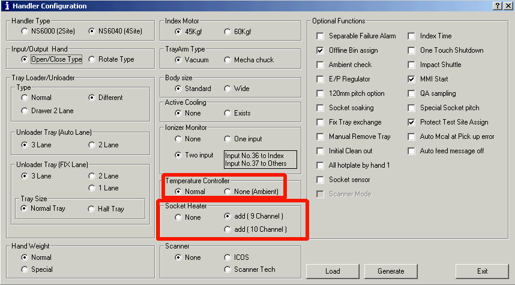

Service History
Subject: NS6000 series Handler Configuration for Socket
Handler Model: NS-6000
Controller: SRC520
Date: 18 Jul 2012
For NS-6000 Handler Configuration.
[Socket Heater]
- What is option "None"?
- What is "add( 9 Channel )"?
- What is "add( 10 Channel)"?
If there is NS-6040 has socket heater, then which option to select? "add( 9 Channel )" or "add( 10 Channel )"?

add (9 Channel)--->Normal Type (Heater Block)
add (10 Channel) --->Blower Heater Type